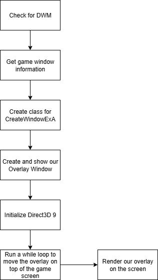

Game Vulnerability Researcher | Anti-Cheat Enthusiast
Here are some of my favorite projects I've worked on
Have you ever wanted to create an overlay for your cheats and wern't sure where to start? Below we will explore how to code an overlay that will work for nearly any game!
If you aren't sure how overlays work already, I recommend you read my previous post, which you can find here:
How do Cheat Overlays Work?. It explains the concepts behind how overlays work and how to setup your environment for this project.
Please hover over any words highlighted in purple to get a description of what they mean!
Our code will follow a structure similar to this:
DWM (Desktop Window Manager) is a Windows service that renders the GUI for windows. It does this through drawing to an off-screen surface within video memory. Then renders the image onto the display.
DWM enables us to be able to create our transparent window seamlessly.
How do we check for DWM?
There is a function available to us to check for DWM, that being DWMIsCompositionEnabled()
Code:
void checkDWM()
{
BOOL isEnabled;
HRESULT hr = DWMIsCompositionEnabled(&isEnabled);
if (!isEnabled)
{
printf("DWM is not enabled on your machine...");
}
}
In order to gather information on our games screen, we need to first find the screen, and return the handle from it.
If we were successful in finding a handle, we can then grab the process ID for the window which we can then use to obtain the games process handle.
Next, we're going to gather information regarding the dimensions of the screen. We can do this by utilizing GetWindowRect().
We can then set some other variables during this time based off the dimensions such as our overlays width and height.
Lastly, we can call MoveWindow(), which will move our overlay window to the same position as our games window based on the variables we gathered earlier.
We'll also want to go ahead and define a place that we can store all the values we're gathering so that we can use them in later functions.
Code:
struct WindowInfo
{
HWND gameWindowHandle;
DWORD gameWindowProcID;
RECT rect;
MARGINS margin;
}
struct OverlayInfo
{
int width;
int height;
}
HANDLE gameHandle;
void getGameWindowInfo()
{
windowInfo.gameWindowHandle = FindWindowA(0, "Title of game's window");
if (windowInfo.gameWindowHandle)
{
GetWindowThreadProcessId(windowInfo.gameWindowHandle, &windowInfo.gameWindowProcID);
gameHandle = OpenProcess(PROCESS_ALL_ACCESS, false, windowInfo.gameWindowProcID);
GetWindowRect(windowInfo.gameWindowHandle, &windowInfo.rect);
overlayInfo.width = windowInfo.rect.right - windowInfo.rect.left;
overlayInfo.height = windowInfo.rect.bottom - windowInfo.rect.top;
overlayInfo.margin = { 0, 0, overlayInfo.width, overlayInfo.height };
MoveWindow(overlayInfo.overlayWindowHandle, windowInfo.rect.left, windowInfo.rect.top, overlayInfo.width, overlayInfo.height, true);
}
}
In order to use the function CreateWindowEx, we first have to register a class that we will use to set some parameters for our Window.
There are too many parameters to explain here, I highly recommend you check out the MSDN for the structure which can be found here: WNDCLASSEXA structure
After setting the class structure, along with a winproc function to handle the windows functionality. We can then register the class!
As well we'll include updates to our previous structures
Code:
struct WindowInfo
{
HWND gameWindowHandle;
DWORD gameWindowProcID;
RECT rect;
}
struct OverlayInfo
{
WNDCLASSEXA class;
char name[256];
int width;
int height;
}
LRESULT CALLBACK WinProcedure(HWND hWnd, UINT message, WPARAM wParam, LPARAM lParam)
{
switch (message)
{
case WM_PAINT:
direct3D9XRender();
break;
case WM_DESTROY:
PostQuitMessage(1);
break;
default:
return DefWindowProc(hWnd, message, wParam, lParam);
break;
}
return 0;
}
void createClass(WNDPROC winproc, char* windowName, HINSTANCE hInstance)
{
sprintf_s(overlayInfo.name, "%s", windowName);
overlayInfo.class.cbClsExtra = 0;
overlayInfo.class.cbSize = sizeof(WNDCLASSEXA);
overlayInfo.class.cbWndExtra = 0;
overlayInfo.class.hbrBackground = (HBRUSH)CreateSolidBrush(RGB(0, 0, 0));
overlayInfo.class.hCursor = LoadCursor(0, IDC_ARROW);
overlayInfo.class.hIcon = LoadIcon(0, IDI_APPLICATION);
overlayInfo.class.hIconSm = LoadIcon(0, IDI_APPLICATION);
overlayInfo.class.hInstance = hInstance;
overlayInfo.class.lpfnWndProc = winproc;
overlayInfo.class.lpszClassName = overlayInfo.name; // May cause issues
overlayInfo.class.lpszMenuName = nullptr; // May cause issues
overlayInfo.class.style = CS_HREDRAW | CS_VREDRAW;
if (!RegisterClassExA(&overlayInfo.class))
{
exit(1);
}
}
Depending on how you setup your project you can retrieve hInstance in a variety of ways. Since I was injecting a DLL that would then create the external overlay, I retrieved hInstance from the DLL attach process.
Now that we have registered our class, we can create our overlay window as well as show it overtop the games window. As we mentioned earlier,
since we've already identified that DWM is working on our machine, we can utilize DwmExtendFrameIntoClientArea().
As well, during this process we will set attributes for the window such as our Alpha value. That way we can have a transparent overlay, or a solid one if you'd prefer!
Code:
void createAndShowOverlay(HINSTANCE hInstance)
{
overlayInfo.overlayWindowHandle = createWindowExA(WS_EX_TOPMOST | WS_EX_LAYERED | WS_EX_TRANSPARENT, overlayInfo.name, "My overlay", WS_POPUP, 1, 1, overlayInfo.width, overlayInfo.height, 0, 0, hInstance, 0);
SetLayeredWindowAttributes(overlayInfo.overlayWindowHandle, RGB(0, 0, 0), 122, LWA_COLORKEY | LWA_ALPHA);
ShowWindow(overlayInfo.overlayWindowHandle, SW_SHOW);
DwmExtendFrameIntoClientArea(overlayInfo.overlayWindowHandle, &overlayInfo.margin);
}
createWindowExA() is a finicky function and it will either work perfectly or it will fail and tell you that it failed to create. You can utilize GetLastError() to check the error code that it is returning.
During my time creating this program, I ran into issues with the lpClassName and lpWindowName. I recommend debugging your program when you run it and place breakpoints of those lines of code to see what may be causing issues.
Before we are able to start rendering to our screen, we first need to initialize out DirectX so that we can interact with our GPU to render.
To do this we'll create an IDirect3D9EX interface. Then we will intialize our D3DPRESENT_PARAMETERS structure and set it's parameters to meet how our overlay will be setup.
Finally, we will create our device which will interact with the GPU along with any other additional interfaces we need such as ID3DXLine so that we can draw on our overlay window.
Code:
IDirect3D9Ex* m_pObject;
IDirect3DDevice9Ex* m_pDevice;
D3DPRESENT_PARAMETERS m_D3DParam;
ID3DXLine* m_pLine;
void Direct3D9XInit(HWND hwnd)
{
hr = Direct3DCreate9Ex(D3D_SDK_VERSION, &m_pObject); // Creates an IDirect3D9Ex interface to create Direct 3D 9Ex objects
ZeroMemory(&m_D3DParam, sizeof(m_D3DParam)); // Initializes our D3DPRESENT_PARAMETERS with all zeros
m_D3DParam.Windowed = true; // If application (our game) runs windowed
m_D3DParam.BackBufferFormat = D3DFMT_A8R8G8B8; // Defines how color or depth information is stored
m_D3DParam.BackBufferWidth = overlayInfo.width; // Width of the new swap chain's back buffer in pixels (Our overlay's width)
m_D3DParam.BackBufferHeight = overlayInfo.height; // Height of the new swap chain's back buffer in pixels (Our overlay's height)
m_D3DParam.EnableAutoDepthStencil = true; // Makes Direct3D manage depth buffers for the application
m_D3DParam.AutoDepthStencilFormat = D3DFMT_D16; // The format of the automatic depth-stencil surface the device will create
m_D3DParam.SwapEffect = D3DSWAPEFFECT_DISCARD; // When rendering, this makes it present the back buffer, then discard it
// Creates a device to represent the display adapter
hr = m_pObject->CreateDeviceEx(D3DADAPTER_DEFAULT, D3DDEVTYPE_HAL, hwnd, D3DCREATE_HARDWARE_VERTEXPROCESSING, &m_D3DParam, 0, &m_pDevice);
if (m_pLine == nullptr)
{
// Creates the interfact to implment line drawing
D3DXCreateLine(m_pDevice, &m_pLine);
}
}
As I mentioned in the concepts article, when we are rendering with Direct3D, we have to include everything we want to render within BeginScene() and EndScene().
For my overlay, my main focus was to make something that works, and then to make it pretty and conventional afterwards.
With that in mind, my focus for creating my first iteration of the overlay was to have a way to make the overlay appear and disapeer. As well as create a tiny box that would be able to hold information once I created a font interface to write text.
Code:
void direct3D9XRender()
{
m_pDevice->BeginScene();
if (GetForegroundWindow() == windowInfo.gameWindowHandle) // Compares current focused window to the window that we specified in FindWindowA()
{
if (GetAsyncKeyState(VK_INSERT) & 1)
{
bMenuEnabled = !bMenuEnabled;
}
if (bMenuEnabled)
{
RECT pos;
pos.right = 900; // Position away from the right
pos.bottom = 900; // Position away from the bottom
pos.left = 20; // Position away from the left
pos.top = 20; // Position away from the top
// Black Background of border
draw::filledRect(18, 20, 250, 120, D3DCOLOR_ARGB(5, 0, 255, 0), m_pLine);
// Outer rect for border
draw::borderedRect(17, 19, 250, 120, 1, 1, 1, 1, D3DCOLOR_ARGB(255, 255, 255, 255), m_pLine);
// White title rect
draw::filledRect(17, 19, 250, 19, D3DCOLOR_ARGB(255, 255, 255, 255), m_pLine);
}
}
m_pDevice->EndScene();
m_pDevice->PresentEx(0, 0, 0, 0, 0);
m_pDevice->Clear(0, 0, D3DCLEAR_TARGET, 0, 1.0f, 0);
}
Deciding what and how to draw can be a little complicated and a bit outside of the scope of this post. I will include a link at the bottom to the MSDN that speaks on how drawing works in Direct3D.
As well you can notice at the bottom we have to call PresentEx() and Clear(). Which are responsible for presenting our rendered screen as well as clearing one or more surfaces, respectively.
That was a lot of code! Hopefully most of it made sense. Luckily we are at the end and can finally call all the functions we setup.
We will call all our check and initializing functions and then run a while true loop that will continuously run getGameWindowInfo() so that we can continue to move our overlay on top of our screen regardless if we decide to move the game screen's position on our monitor.
Code:
int main() {
checkDWM();
getGameWindowInfo();
createClass(WinProc, (char*)"My overlay", hInstance);
createAndShowOverlay(hInstance);
direct3D9XInit(overlayInfo.overlayWindowHandle);
while (true)
{
getGameWindowInfo();
if (GetAsyncKeyState(VK_END) & 1)
{
break;
}
Sleep(1);
}
return 0;
}
It was very cool to be able to finally create my own overlay for a cheat. It's something that I've always struggled with in the past and had a hard time grasping exactly how graphic API's work and how we can use them to draw overtop the game window.
Now that I have a better understanding of how we utilize creating a new window that overlaps our game window, then we interact directly with our GPU to render graphics onto the transparent screen. We are able to create an overlay that depending on how you implment it, gives us the ability to display information from the game.
I hope you were able to learn something from this post! It's my first time trying to explain how code works and I'm not sure how it came across so please feel free to let me know of anything I could improve!
Next week I will be starting to look more into Anti-Cheat and the techniques utilizied to detect and prevent cheating.
Please take care, take some time to learn something new, and happy game hacking!
NitoTech
Documentation:
MSDN - Primitives (Direct3D 9 Graphics)Videos:
Guided Hacking - Skyrim Overlay Example